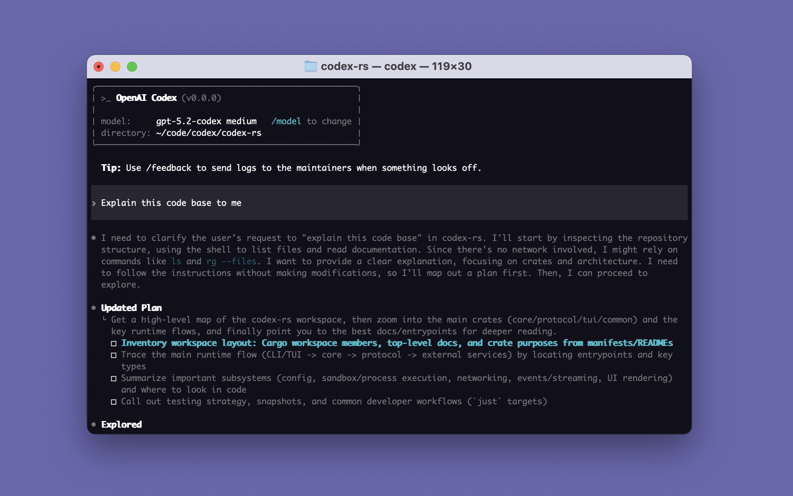
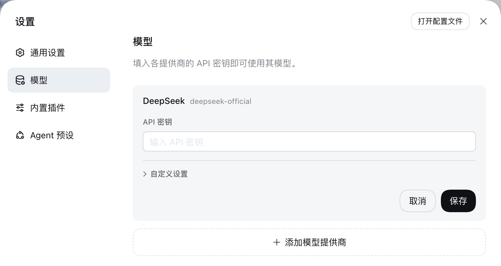

本地 codex
CLI/TUI 信息层级
当前采用：dsh 导航骨架 + 本地 codex 的输入/运行状态 + ZCode 的 Files/Review 面板。当前原型不展示资料/产物、界面定制或个人工作台；插件配置统一放进设置。
用于评审 Aork 个人远程工作台的模拟 UI。以下区分看过的官方配图、文档描述与设计取舍；未登录或实测这些产品，配图不代表当前版本的完整界面。

以下为当前源码确认的结构，非运行截图。
Files | Review 目录树 → 文件预览 改动来源 → 文件列表 → diff
/Users/yangdi/code/multai/ZCode
Git提交历史另有GitGraph；本轮Aork只做文件与改动查看，不增加提交历史或真实Git操作。


官方仓库 入门文档 首页原图 历史产物原图 · v1.5.5
Aork 不采纳：不增加 Teams 层级、密集 Agent 图标条和助手市场，优先当前配置与最近会话。